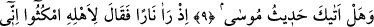
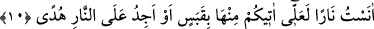
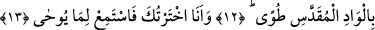
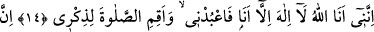
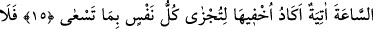
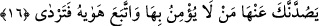

MÛSÂ’NIN HABERİ
SANA ULAŞTI MI?
9. Mûsâ’nın haberi sana ulaştı mı?
10. Hani o, bir ateş görmüştü de âilesine: “Siz durun, ben bir ateş gördüm, belki
ondan size bir kor getiririm, yahut ateşin yanında bir yol gösteren bulurum.”
demişti.
11. Ateşin yanına geldiği zaman kendisine seslenilmişti: “Ey Mûsâ!”
12. “Şüphesiz ben senin Rabbinim, ayakkabılarını çıkar. Sen mukaddes Tuvâ
vâdisindesin.”
13. “Ben seni seçtim. Şimdi vahyedilene kulak ver.”
14. “Muhakkak ki ben, Allâh’ım. Ben den başka ilah yoktur. Bana kulluk et; beni
anmak için namaz kıl.”
15. Kıyamet günü mutlaka gelecektir. Herkes peşinde koştuğu şeyin karşılığını
bulsun diye neredeyse onu gizleyeceğim.
16. Ona inanmayan ve nefsinin arzularına uyan kimseler sakın seni ondan
alıkoymasın; sonra mahvolursun!
“Mûsâ’nın haberi sana ulaştı mı?” Bu âyetin Hz. Peygamber’e Mûsâ (a.s.) hakkında
verilen ilk bilgi olması ihtimâli vardır. Çünkü Tâhâ sûresi ilk nâzil olan sûrelerdendir.
O zaman istifham inkârî olup: ‘Sana şu ana kadar Mûsâ’nın haberi ve kıssası gelmedi.
İşte şimdi sana vahyediyorum, dikkat et! Sûrede bulunan, tevhîd ve diğer konuları
kavmine söyle.’ mânâsına gelir. Ya da âyet takrir, yani tasdik için olup ‘Sana Mûsâ’nın
(a.s.) haberi daha önce geldi.’ demektir.